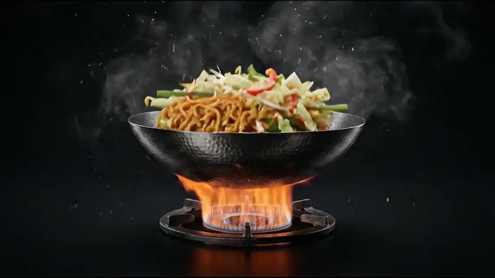
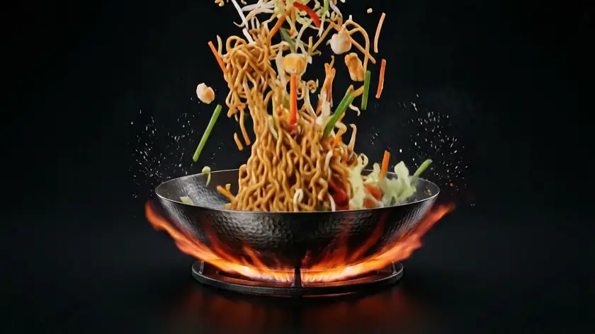

Kreuzlinger Str. 5 · Konstanz Altstadt
Asiatisch essen wie zuhause – frisch aus dem Wok
Familiengeführtes Wok-Restaurant mit vietnamesischen & chinesischen Klassikern: schnell zubereitet, großzügige Portionen, faire Preise – mitten in Konstanz, nur wenige Schritte von der Schweizer Grenze entfernt.
Schnell serviert
Frisch aus dem Wok, ohne lange Wartezeit.
Großzügige Portionen
Satt werden ohne schlechtes Gewissen fürs Portemonnaie.
Faire Preise
Top Preis-Leistung – beliebt bei Studierenden & Familien.
Familiengeführt
Persönlicher Service statt anonymer Systemgastronomie.
Speisekarte
Wok-Küche mit Charakter
Ein Ausschnitt aus unserem Angebot – die vollständige, aktuelle Karte gibt es im Restaurant und auf unserer Speisekarten-Seite.

4,1 ★900+ Bewertungen online
Über uns
Familientradition, frisch gewokt
Seit vielen Jahren bringen wir vietnamesische und chinesische Wok-Küche in die Konstanzer Altstadt – bodenständig, ehrlich und ohne Umwege vom Wok auf den Teller.
- Familiengeführt mit persönlichem Kontakt zu unseren Gästen
- Frische Zubereitung direkt aus dem heißen Wok
- Beliebter Treffpunkt für Studierende & Gäste aus der Bodensee-Region
- Barrierefrei erreichbar in der Konstanzer Altstadt
Bewertungen
Was Gäste sagen
Ausgewählte, sinngemäß wiedergegebene Stimmen aus öffentlichen Bewertungsportalen.
„Das Essen ist super lecker, es kommt schnell und ist in Konstanz echt mein Favorit.“
„Der Chef ist sehr freundlich und die Portionen sind groß – Preis-Leistung stimmt einfach.“
„Gute Auswahl, schnelle und frische Zubereitung und ein super leckeres Endergebnis.“
Quellen: aggregierte Google-Bewertungen sowie RestaurantGuru, Stand September 2026. Einzelne Erfahrungen können abweichen.
FAQ
Häufige Fragen
Muss ich einen Tisch reservieren?
In der Regel ist keine Reservierung nötig. Für größere Gruppen empfehlen wir eine kurze telefonische Rückfrage unter 07531 455802.
Gibt es Essen zum Mitnehmen?
Ja, viele Gerichte eignen sich hervorragend zum Mitnehmen – ideal für die Mittagspause oder unterwegs.
Gibt es auch vegetarische Gerichte?
Neben Fleisch- und Meeresfrüchte-Gerichten stehen auch Gemüse- und Nudelvarianten auf der Karte. Fragen Sie gerne bei der Bestellung nach der aktuellen vegetarischen Auswahl.
Welche Zahlungsmöglichkeiten gibt es?
Die akzeptierten Zahlungsmethoden können variieren – bitte fragen Sie vorab kurz telefonisch nach, falls Sie z.B. auf Kartenzahlung angewiesen sind.
Wo kann ich parken?
Das Restaurant liegt in der Konstanzer Altstadt nahe der Fußgängerzone; in der Umgebung stehen öffentliche Parkmöglichkeiten zur Verfügung.
Wie sind die genauen Öffnungszeiten?
Unsere Standardzeiten finden Sie weiter unten im Kontaktbereich. Da Öffnungszeiten sich kurzfristig ändern können, empfehlen wir bei wichtigen Anlässen eine kurze telefonische Bestätigung.
Kontakt & Öffnungszeiten
So finden Sie uns
Adresse
Kreuzlinger Str. 5
78462 Konstanz
Telefon
Öffnungszeiten
| Montag | Ruhetag* |
| Dienstag – Freitag | 11:30–21:30 |
| Samstag – Sonntag | 12:00–21:30 |
*Angaben laut Branchenportalen, ohne Gewähr – bitte bei wichtigen Anlässen telefonisch bestätigen.
Hunger auf frische Wok-Küche?
Rufen Sie an, bestellen Sie zum Mitnehmen oder schauen Sie einfach vorbei – wir freuen uns auf Sie.